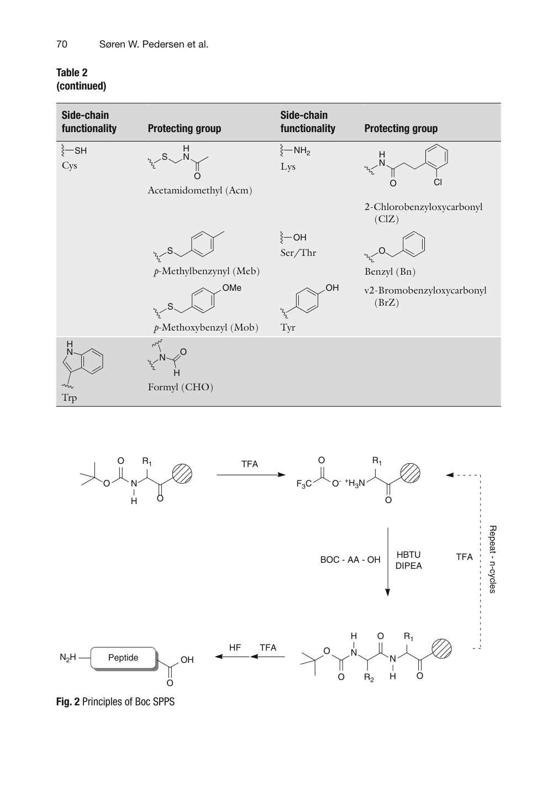
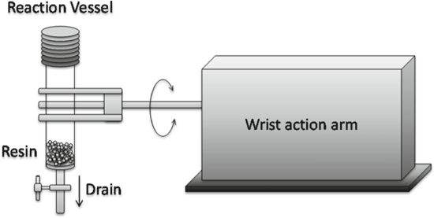
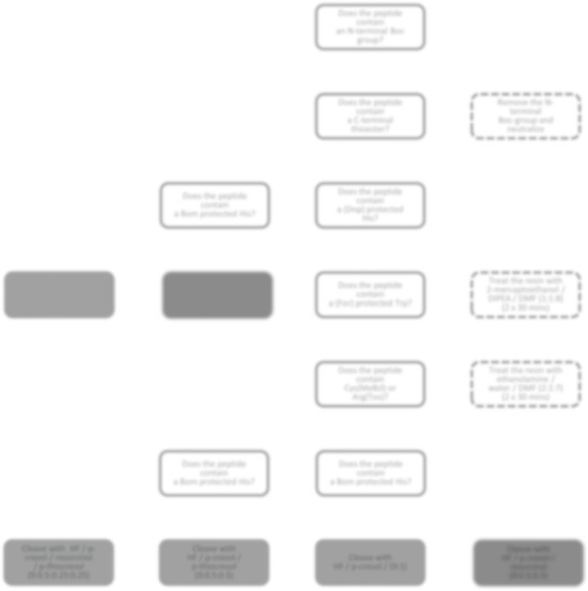
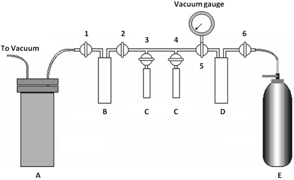
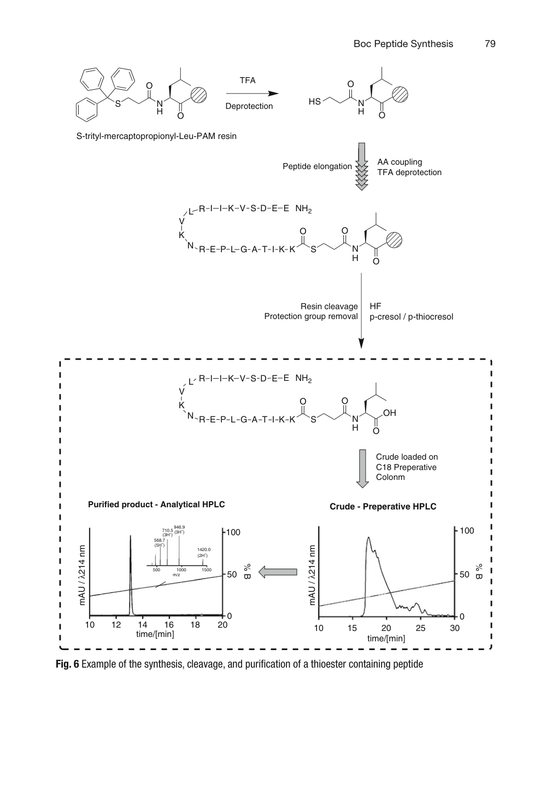

Chapter 4: Synthesis of Peptides Using Tert-Butyloxycarbonyl (Boc)
as the α-Amino Protection Group
使用叔丁氧羰基（Boc）作为α-氨基保护基的多肽合成
Peptide Synthesis and Applications (2013, Humana) Methods in Molecular Biology, vol. 1047
原文作者：Søren W. Pedersen, Christopher J. Armishaw, and Kristian Strømgaard
⚠️ 来源标注：本笔记基于 Peptide Synthesis and Applications Second Edition, Methods in Molecular Biology vol. 1047, DOI: 10.1007/978-1-62703-544-6_4, © Springer Science+Business Media New York 2013. 所有内容均可在原书 Chapter 4 (pages 65-80) 查证。
Boc（叔丁氧羰基）作为Nα-氨基保护基在多肽合成中具有独特优势，特别是在以下场景中：
✓ 疏水性多肽的合成
✓ 含酯键的Depsi peptide（酯肽）合成
✓ 含C端硫酯（thioester）的多肽合成——用于自然化学连接（Native Chemical Ligation, NCL）
Boc SPPS的核心挑战：需要使用极度危险的氢氟酸（HF）处理树脂结合的多肽，这要求特殊的耐腐蚀设备（Teflon材质HF装置）。
📌 来源：原书 Chapter 4, Abstract, p.65 (PDF page 73)
tert-Butyloxycarbonyl (Boc) — 叔丁氧羰基
Hydrogen fluoride (HF) — 氢氟酸
Scavengers — 清除剂（捕获有害中间体）
In situ neutralization — 原位中和法
📌 来源：原书 Chapter 4, Keywords, p.65 (PDF page 73)
在当代固相多肽合成（SPPS）中，基于Nα-氨基保护基的性质和相应的侧链保护基策略，有两种通用策略（见表1）：
• 使用9-芴甲氧羰基（Fmoc）作为Nα-氨基保护基
• Fmoc通过β-消除在强碱条件下去除，最常用哌啶（piperidine）
• 正交侧链保护基通常基于高度酸敏感的叔丁基（tBu）
• 侧链脱保护与树脂切割同时进行：使用三氟乙酸（TFA）完成
• Fmoc/tBu策略是常规SPPS最广泛适用的方法（详见Chapter 2）
📌 来源：原书 Chapter 4, Introduction, p.65 (PDF page 73); Fmoc策略详见Chapter 2
• 使用叔丁氧羰基（Boc）作为Nα-氨基保护基 [参考文献1-3]
• Boc的逐步去除通过酸处理实现，最常用TFA（强酸但弱亲核试剂）
• 侧链保护基通常基于TFA稳定的苄基（Bn）类基团
• 最终侧链脱保护与树脂切割使用极强酸：主要为无水氢氟酸（HF）[参考文献4]
• 替代试剂TFMSA（三氟甲磺酸）或TMSOTf可用，但未广泛采用，因脱保护不完全和副反应增加
📌 来源：原书 Chapter 4, Introduction, pp.65-66 (PDF pages 73-74); 参考文献[1-4]见原书p.80
Boc/Bn策略的核心原理——梯度酸稳定性（Graded Acid Stability）：
利用不同强度的酸来实现：① 逐步去除Nα-Boc保护基（用TFA，中等强度酸）；② 侧链全脱保护与肽切割（用HF，极强酸）。两种酸强度的差异实现了选择性的分步脱保护。
📌 来源：原书 Chapter 4, Introduction, p.66 (PDF page 74)
Boc/Bn策略由Merrifield在1960年代首创，至今仍被广泛使用 [参考文献5]。
📌 来源：参考文献5: Merrifield RB (1963) J Am Chem Soc 85:2149-2154
表1. Boc/Bn策略与Fmoc/tBu策略的优缺点对比
📌 来源：原书 Chapter 4, Table 1, p.66 (PDF page 74)
| 对比维度 | Boc/Bn 策略 | Fmoc/tBu 策略 |
|---|---|---|
| 需要特殊设备 | 是（HF装置） | 否 |
| 试剂成本 | 较低 | 较高 |
| 多肽溶解性 | 较高（氟化物盐） | 较低（TFA盐） |
| 脱保护效率 | 高 | 可能较低 |
| 疏水肽纯度 | 高 | 可能较低 |
| 肽聚集问题 | 较少发生 | 较频繁 |
| 合成速度 | ~20 min/氨基酸 | ~20-60 min/氨基酸 |
| 最终脱保护 | HF | TFA |
| 安全性 | 潜在危险（HF毒性） | 相对安全 |
| 正交性 | 无 | 有 |
关键洞察：
Fmoc/tBu策略是许多实验室的首选方法，主要原因是Boc/Bn策略需要使用高腐蚀性的HF进行切割
但Boc/Bn策略有诸多优势：试剂成本更低、肽溶解性更好（HF切割产生的肽氟化物盐比TFA盐溶解度更高）
在Fmoc/tBu策略中，肽聚集和二级结构形成是更常见的问题——因为Fmoc去除后产生的是中性α-氨基，而Boc去除后产生的是带正电荷的α-氨基，后者能抑制树脂上的二级结构形成
📌 来源：原书 Chapter 4, Introduction, pp.66-67 (PDF pages 74-75)
Boc/Bn策略在以下类型多肽的合成中具有显著优势：
（1）含碱敏感官能团的多肽：
Depsi peptide（酯肽）——含酯键的多肽
C端硫酯肽——用于自然化学连接（NCL），目前尚无普遍适用的Fmoc/tBu策略
📌 来源：原书 Chapter 4, Introduction & Fig. 1, p.67 (PDF page 75); Chapter 8详述thioester
（2）疏水性多肽序列：
如膜锚定片段（membrane-anchored segments）
Boc策略合成的疏水肽纯度通常高于Fmoc策略
📌 来源：原书 Chapter 4, Fig. 1, p.67 (PDF page 75)
（3）不适合Boc策略的情况：
含酸敏感官能团的多肽：特别是糖基化和磷酸化肽
原因：HF切割条件过于剧烈，会破坏糖苷键和磷酸酯键
📌 来源：原书 Chapter 4, Introduction, p.67 (PDF page 75)
Boc/Bn策略的基本合成循环包括以下步骤：
步骤1 — Boc脱保护（Deprotection）：
用TFA（纯TFA或TFA/DCM溶液）处理树脂结合的氨基酸，去除Nα-Boc保护基。酸解脱保护在N端α-氨基上形成铵盐-TFA盐（ammonium-TFA salt）。
这与Fmoc-SPPS的碱性脱保护不同——TFA盐可能影响后续偶联效率，需要通过原位中和（in situ neutralization）来克服。
📌 来源：原书 Chapter 4, Section 1.1, p.68 (PDF page 76); 参考文献[6,7]
步骤2 — 原位中和与偶联（In Situ Neutralization & Coupling）：
在偶联步骤中加入两倍过量的活化碱（如DIEA），实现：
同时中和TFA盐（原位中和），无需单独的中和步骤
同时将入活化氨基酸与已中和的氨基偶联
这种"双作用模式"称为原位中和法（In Situ Neutralization），由Schnölzer等人开发 [参考文献6,7]。
📌 来源：参考文献6: Schnölzer M, Alewood P, Jones A, Alewood D, Kent SBH (1992) Int J Pept Protein Res 40:180-193
📌 来源：参考文献7: Schnölzer M, et al. (2007) Int J Pept Res Ther 13:31-44
步骤3 — 过量试剂驱动反应完成：
使用2-4倍过量的活化氨基酸
活化氨基酸由氨基酸+偶联试剂+活化碱在原位（in situ）形成
通常可实现>99%的偶联产率
📌 来源：原书 Chapter 4, Section 1.1, p.68 (PDF page 76)
步骤4 — 树脂洗涤：
每次脱保护和偶联步骤后，用DMF充分洗涤树脂以去除过量试剂。
📌 来源：原书 Chapter 4, Section 1.1, p.68 (PDF page 76)
步骤5 — HF切割与全脱保护：
完成全链组装后，用无水HF进行最后的树脂切割和侧链保护基去除。
HF的性质：
高挥发性（沸点19°C）
非氧化性酸
通常提供非常干净的肽切割
但对标准实验玻璃器皿有强烈腐蚀性
需要在特殊的耐腐蚀Teflon装置中操作
📌 来源：原书 Chapter 4, Section 1.1, p.68 (PDF page 76)
HF切割中的清除剂（Scavengers）：
HF处理时，必须使用一系列清除剂来防止有害副反应，如苄基碳正离子（benzyl carbocations）引起的烷基化反应。
p-Cresol（对甲酚）
p-Thiocresol（对硫代甲酚）
Resorcinol（间苯二酚）
这些清除剂在过量使用时，通过模拟侧链保护基的结构来捕获有害中间体，防止副反应。
📌 来源：原书 Chapter 4, Section 1.1, p.68 (PDF page 76)

Fig. 2 Boc SPPS原理流程图（原书p.70, PDF page 78）
📌 来源：原书 Chapter 4, Fig. 2, p.70 (PDF page 78)
图2解读——Boc SPPS循环流程：
1. 起始：树脂结合的Boc保护氨基酸（Boc-AA-O-Resin）
2. TFA脱保护：用TFA去除Boc基团，释放游离α-氨基（形成TFA盐）
3. 偶联：加入新的Boc-AA-OH + HBTU（偶联试剂）+ DIPEA（活化碱），形成新肽键
4. 重复n个循环：步骤2-3重复，逐个延伸肽链
5. 最终HF切割：用HF从树脂上释放完成的多肽，同时去除所有侧链保护基
📌 来源：原书 Chapter 4, Fig. 2, p.70 (PDF page 78)
Boc/Bn策略中，氨基酸侧链保护基必须能耐受反复的TFA处理（用于逐步去除Boc）。最常用的侧链保护基如下表所示。
更详细的保护基讨论见参考文献8（Isidro-Llobet et al., 2009, Chem Rev 109:2455-2504）。
📌 来源：原书 Chapter 4, Table 2, pp.69-70 (PDF pages 77-78); 参考文献[8]
| 氨基酸 | 侧链官能团 | 保护基（缩写） | 全称 |
|---|---|---|---|
| Arg 精氨酸 | 胍基(NH/NH₂) | Mts | Mesityl-2-sulfonyl (均三甲基苯磺酰基) |
| Arg | 胍基(NH) | Tos (Tosyl) | p-Toluenesulfonyl (对甲苯磺酰基) |
| Arg | 胍基(NH) | Bom | N-Benzyloxymethyl (苄氧甲基) |
| Arg | 胍基(NH) | Dnp | N-2,4-Dinitrophenyl (2,4-二硝基苯基) |
| Asp/Glu 天冬/谷氨酸 | 羧基(OH) | OBzl | O-Benzyl (O-苄基) |
| Asp/Glu | 羧基(OH) | OcHex | O-Cyclohexyl (O-环己基) |
| Asp/Glu | 羧基(OH) | OtBu | O-tert-Butyl (O-叔丁基)*注:较少用于Boc |
| Asp/Glu | 羧基 | Z | Benzyloxycarbonyl (苄氧羰基) |
| Cys 半胱氨酸 | 巯基(SH) | Acm | Acetamidomethyl (乙酰氨基甲基) |
| Cys | 巯基(SH) | Meb | p-Methylbenzyl (对甲基苄基) |
| Cys | 巯基(SH) | Mob | p-Methoxybenzyl (对甲氧基苄基) |
| His 组氨酸 | 咪唑基(NH) | Tos (Tosyl) | p-Toluenesulfonyl (对甲苯磺酰基) |
| His | 咪唑基(N) | Trt | Trityl (三苯甲基) |
| His | 咪唑基(N) | Z (Bom) | Benzyloxycarbonyl (苄氧羰基) |
| Lys 赖氨酸 | 氨基(NH₂) | ClZ | 2-Chlorobenzyloxycarbonyl (2-氯苄氧羰基) |
| Ser/Thr 丝/苏氨酸 | 羟基(OH) | Bn | Benzyl (苄基) |
| Trp 色氨酸 | 吲哚(NH) | CHO (For) | Formyl (甲酰基) |
| Tyr 酪氨酸 | 酚羟基(OH) | BrZ | 2-Bromobenzyloxycarbonyl (2-溴苄氧羰基) |
注意：以上保护基的选择基于对TFA的稳定性——必须在反复TFA处理（Boc脱保护）过程中保持稳定，仅在最终HF处理时被去除。
📌 来源：原书 Chapter 4, Table 2, pp.69-70 (PDF pages 77-78)
Boc合成前需选择适当的树脂/连接子（Table 3）。主要类型如下：
📌 来源：原书 Chapter 4, Table 3, p.71 (PDF page 79)
| C末端类型 | 树脂名称 | 特点 | 连接子结构特征 |
|---|---|---|---|
| 酰胺 (Amide) -CO-NH₂ | MBHA | • 从树脂上高效切割 • 对酸脱保护稳定 | 4-Methylbenzhydrylamine 含-NH-Me结构 |
| 羧酸 (Carboxylic acid) -COOH | Merrifield | • 高效切割 • 在纯TFA中不稳定 → 需用TFA/DCM (1:1)脱保护 | Chloromethyl 含-Cl功能基 |
| 羧酸 (Carboxylic acid) -COOH | PAM | • 对TFA高度稳定 • 多种预装载变体可商业获得 | Phenylacetamidomethyl 含-OCH₂-PhNHCO-结构 |
| 硫酯 (Thioester) -CO-SR | TAMPAL | • HF切割后用硫醇试剂处理 → 转化为C端硫酯 • 专用于自然化学连接(NCL) | S-Trityl-mercaptopropionyl 含-S-Trt-结构 |
TAMPAL树脂的制备：
将商品化的S-Tritylmercaptopropionic acid偶联到Boc-Leu-OCH₂-PAM树脂上，然后用TFA/TIPS/water (90:5:5)脱保护 [参考文献11]。
Boc策略在合成肽硫酯方面特别有吸引力。
📌 来源：参考文献11: Hojo H, et al. (1993) Bull Chem Soc Jpn 66:2700-2706
📌 来源：原书 Chapter 4, Table 3 & text, pp.69,71 (PDF pages 77,79)
固体支持体: Merrifield树脂或预装载PAM树脂
Nα-Boc保护氨基酸: 所有20种天然氨基酸的Boc保护形式
偶联试剂: HBTU (N-[(1H-苯并三氮唑-1-基氧)(二甲氨基)亚甲基]-N-甲基甲铵六氟磷酸盐)
活化碱: DIEA (N,N-二异丙基乙胺)
溶剂1: DMF (N,N-二甲基甲酰胺)
溶剂2: DCM (二氯甲烷)
脱保护试剂: TFA (三氟乙酸)
反应器: 带底部滤板、Teflon帽和活塞的玻璃反应器
混合设备: 腕臂式振荡器（wrist-action shaker，见图3）
排水/真空配件: 用于快速排出试剂和树脂洗涤
Kaiser test试剂: 试剂A: 0.5g茚三酮溶于10mL EtOH (w/v); 试剂B: 80%苯酚的EtOH溶液(w/v); 试剂C: 0.4mL 0.001M KCN水溶液溶于20mL吡啶
📌 来源：原书 Chapter 4, Section 2.1, pp.71-72 (PDF pages 79-80)
氢氟酸: 无水HF (anhydrous)
清除剂: 见流程图（Fig. 4）选择适当的清除剂组合
HF装置: 专用Teflon材质HF装置（见图5）及配件
📌 来源：原书 Chapter 4, Section 2.2, p.72 (PDF page 80)
腕臂式振荡器+玻璃反应器是进行固相合成的简单方便的设备组合（图3）。其工作原理：
腕臂振荡器确保反应悬浮液处于流动状态，不会研磨树脂颗粒
旋转速度可调，确保充分混合并防止树脂结块
玻璃反应器两端可通过活塞和Teflon盖密封
反应器一端有滤板，允许排放液体而不损失树脂
可施加轻微真空加速排放，便于flow wash
📌 来源：原书 Chapter 4, Section 3.1, p.72 (PDF page 80)
其他手动系统：
MiniBlock系统（Mettler Toledo）：可并行进行多个合成，反应器为一次性
自动化Boc合成仪：
Symphony (Protein Technologies, Tucson, AZ, USA)
Apex 396 (AAPPTec, Louisville, KY, USA)
Liberty (CEM, Matthews, NC, USA)
📌 来源：原书 Chapter 4, Section 3.1, p.72 (PDF page 80)

Fig. 3 腕臂式振荡器示意图（原书p.73, PDF page 81）
操作步骤：
1. 称取所需量的树脂，放入带滤板和Teflon螺旋帽的玻璃反应器中。关闭活塞，加入DMF至液面高于树脂2cm。
2. 让树脂溶胀至少20分钟。
3. 如果使用预装载树脂且有保护基，直接进入脱保护步骤。
📌 来源：原书 Chapter 4, Section 3.1.1, p.74 (PDF page 82)
提示：第一个氨基酸偶联到树脂上有时比较困难，因此使用预装载树脂可能更有优势。
偶联可使用不同的偶联试剂和活化碱。以下方案使用HBTU/DIEA，适用于0.25 mmol规模合成。
化学计量（Table 4）：
| 试剂 | 当量(Eqv.) | mmol | 体积 |
|---|---|---|---|
| Boc-AA-OH | 4 | 1 | — |
| HBTU (0.5M in DMF) | 4 | 1 | 2 mL |
| DIEA | 8 | 2 | 0.348 mL |
📌 来源：原书 Chapter 4, Table 4, p.75 (PDF page 83)
偶联详细操作步骤：
1. 使用4:4:8 (AA:HBTU:DIEA)的化学计量比（相对于树脂）。
2. 制备0.5M HBTU的DMF储备液（温和加热可能有助于溶解）。
3. 称取4当量Boc保护氨基酸到25mL可密封玻璃闪烁瓶中，加入相应体积的HBTU储备液，密封后摇动至完全溶解。
4. 加入DIEA，摇匀。等待2-3分钟活化（注意：溶液可能变色，表示活化酯的形成）。
5. 将活化氨基酸溶液转移到含树脂的反应器中。溶液量应足以使树脂充分溶胀、自由流动；如不够可补加DMF并延长偶联时间。
6. 用Teflon帽密封反应器，开启腕臂振荡器。速度调至树脂悬浮液持续运动但不剧烈摇晃（见Note 1）。
7. 偶联通常在10-20分钟内完成。可用Kaiser test检测偶联效率（见Note 2）。
• 如果偶联不完全：珠子和溶液变蓝，需重复偶联步骤
• 如果偶联完全（不变色）：打开盖子，打开活塞，抽真空去除试剂
8. 用DMF flow wash树脂1分钟。
📌 来源：原书 Chapter 4, Section 3.2, pp.74-75 (PDF pages 82-83)
Boc基团的脱保护步骤：
1. 用DCM flow wash树脂30秒，去除残余DMF。关闭活塞，加入足量纯TFA使树脂在摇动时能自由运动。盖上盖子，开始旋转。
2. 脱保护1分钟，打开活塞排出TFA。注意：避免过多空气通过树脂，特别是含氧敏感基团（Met、Cys、硫酯）的肽。
3. 用DCM flow wash 1分钟。
4. 重复脱保护步骤以确保Boc基团完全去除。
5. 用DMF flow wash 1分钟，淬灭并去除残余TFA。
📌 来源：原书 Chapter 4, Section 3.2.1, p.75 (PDF page 83)
如果合成在中途暂停，需用DCM充分洗涤树脂，然后将反应器转移到干燥器中储存。
📌 来源：原书 Chapter 4, Section 3.2.2, p.75 (PDF page 83)
清除剂的选择取决于氨基酸保护基组合和肽的类型。使用清除剂流程图（Fig. 4）进行选择。
清除剂用量见Table 5：
| 树脂量 | 清除剂用量(mL) | HF总体积(mL) |
|---|---|---|
| < 150 mg | 0.5 | 5 |
| 150 mg < 树脂 < 500 mg | 1 | 10 |
| > 500 mg | 1.5 | 15 |
注：10%清除剂 / 90% HF的混合比例。
📌 来源：原书 Chapter 4, Table 5, p.76 (PDF page 84)

Fig. 4 HF切割清除剂选择流程图（原书p.73, PDF page 81）
流程图决策树详解：
决策1：肽是否含有N端Boc基团？
是 → 先去除N端Boc基团并中和，再继续
否 → 直接进入下一步
📌 来源：原书 Chapter 4, Fig. 4, p.73 (PDF page 81)
决策2：肽是否含有C端硫酯？
是 → 进入Bom保护His的判断分支
否 → 进入Dnp保护His的判断分支
📌 来源：原书 Chapter 4, Fig. 4, p.73 (PDF page 81)
含C端硫酯的肽：
含Bom-His → HF/p-cresol/resorcinol (9:0.5:0.5)
不含Bom-His → HF/p-cresol (9:1)
📌 来源：原书 Chapter 4, Fig. 4, p.73 (PDF page 81)
不含C端硫酯的肽：
含Dnp-His → 先用2-mercaptoethanol/DIPEA/DMF (1:1:8) 处理2×30 min
不含Dnp-His → 进入For-Trp判断
含For-Trp → 先用ethanolamine/water/DMF (2:1:7) 处理2×30 min
不含For-Trp → 进入Cys(MeBzl)/Arg(Tos)判断
📌 来源：原书 Chapter 4, Fig. 4, p.73 (PDF page 81)
最终切割方案（不含硫酯、不含Dnp-His/For-Trp的情况）：
含Cys(Meb)或Arg(Tos)：
→ • 含Bom-His → HF/p-cresol/resorcinol/p-thiocresol (9:0.5:0.25:0.25)
→ • 不含Bom-His → HF/p-cresol/p-thiocresol (9:0.5:0.5)
不含Cys(Meb)和Arg(Tos)：
→ • 含Bom-His → HF/p-cresol/resorcinol (9:0.5:0.5)
→ • 不含Bom-His → HF/p-cresol (9:1)
📌 来源：原书 Chapter 4, Fig. 4, p.73 (PDF page 81)
通常1小时反应时间足够，但如果肽包含以下情况，建议2小时：
Arg(Tos) — 精氨酸 Tos 保护
Cys(Meb) — 半胱氨酸 Meb 保护
MBHA树脂
超过20个氨基酸残基的肽
📌 来源：原书 Chapter 4, Section 3.3.2, p.76 (PDF page 84)
HF装置概述：
HF装置是一个完全封闭的系统，由三个主要部分组成（图5）：
HF压力钢瓶（HF pressure cylinder）—— 图5(E)
蒸馏管/容器和阀门（distillation tubings/vessels with valves）—— 图5(D)
氧化钙塔连接真空泵（calcium oxide tower + vacuum pump）—— 图5(A)
安全要点：
所有接触HF的部件均为Teflon材质或有Teflon表面
HF始终从钢瓶流向CaO塔，绝不反向
主要驱动力是通过水浴或丙酮/干冰Dewar瓶产生的温差
📌 来源：原书 Chapter 4, Section 3.3.3 & Fig. 5, p.76 (PDF page 84)

Fig. 5 HF装置示意图 (A)CaO塔; (B)大型反应器; (C)反应器; (D)蒸馏器; (E)HF钢瓶（原书p.74, PDF page 82）
详细操作步骤：
步骤1: 开启真空泵，打开HF manifold上的阀门1、2和6以抽真空系统。在蒸馏器下方放置干冰/丙酮Dewar瓶。
步骤2: 从manifold上取下反应器，称取树脂到反应器中。加入清除剂（按Fig. 4选择）。用干冰/丙酮浴冷冻树脂-清除剂混合物。放入搅拌子，盖上防溅帽，连接到manifold。打开阀门3和4抽真空。在反应器上放置小型丙酮/干冰Dewar瓶。
步骤3: 15分钟后，关闭阀门3、4和5。打开HF钢瓶，等待足够量HF转移到蒸馏器中。通过移除Dewar瓶、从后方打光观察内容物来检查HF体积。如需更多HF，放回Dewar瓶等待2-3分钟再检查。如果HF转移很慢，可能需要重新抽真空蒸馏器：关闭阀门6，短暂打开阀门5（2-3秒），再打开阀门6，等待1-3分钟后检查。
步骤4: 当蒸馏器中有足够HF后，关闭HF钢瓶阀，然后关闭阀门6。移除蒸馏器的Dewar瓶，换上60°C恒温 水浴，搅拌10分钟。
步骤5: 关闭阀门2，打开阀门5。等待10-15秒，然后打开反应器（阀门3和4）。1-2分钟后检查反应器中HF液面。当足够HF转移至反应器后，关闭反应器（阀门3和4），打开阀门2让manifold内多余HF被抽走。移除Dewar瓶，换上冰/盐浴放在磁力搅拌器上。确保温度在切割过程中保持恒定，以防止有害副反应。
步骤6: 切割时间到后，关闭阀门5，然后非常缓慢地转动反应器阀门（3和4），直到每个反应器中出现轻微气泡。初始气泡不应超过液面以上2-3cm。随HF蒸发进行，阀门可完全打开以允许HF完全蒸发。
步骤7: 检查反应器中是否残留HF：关闭阀门3和4，等15秒让真空恢复，然后快速打开阀门。如有bumping现象，再等1-2分钟重复，直到无bumping（通常重复2-3次）。然后关闭阀门3和4。
步骤8: 移除磁力搅拌器和冰/盐浴，放在通风橱底部。
步骤9: ⚠️ 危险步骤：小心取下反应器放入冰/盐浴中（残留HF可能溅出）。小心取下防溅帽，丢入冰浴中淬灭残留HF。加入反应器容积3/4的冷乙醚沉淀肽，搅拌5-10分钟。
步骤10: 同时打开manifold上阀门1、2、5和6，让残留HF从管路中抽走10-15分钟。然后打开真空管路上的三通阀，让空气通过泵吹扫5分钟再关泵。确保所有阀门关闭，再次确认HF钢瓶阀已关闭。
步骤11: 用聚乙烯滤板从乙醚中过滤肽/树脂，用额外3/4反应器容积的冷乙醚洗涤。
步骤12: 用反应器容积3/4的H₂O/乙腈/TFA (1:1:0.002)缓冲液溶解肽/树脂混合物，将肽与树脂分离。过滤至圆底瓶中，冷冻干燥滤液。
步骤13: 用DCM/甲醇(1:1)清洗反应器，再用肥皂水洗涤（注意螺纹处树脂残留），丙酮冲洗，彻底干燥后放回manifold。
📌 来源：原书 Chapter 4, Section 3.3.3, pp.76-78 (PDF pages 84-86)
安全措施（Safety Measures）：
进行HF转移时确保附近有人（最好在实验室内）
开始工作前确认钙葡萄糖酸凝胶（calcium gluconate gel）的位置，以防HF灼伤
进行HF转移时穿戴适当的橡胶手套、围裙和全面罩
保持通风橱整洁有序，避免事故
📌 来源：原书 Chapter 4, Safety measures, p.78 (PDF page 86)
本章展示了一个含硫酯肽的标准Boc-SPPS合成实例（图6）。
合成过程：
使用预装载的三苯甲基保护TAMPAL树脂(0.25 mmol)
DMF溶胀20分钟，TFA脱保护2次（每次1分钟）
第一个氨基酸偶联：使用侧链和Boc保护的Lys，HBTU/DIEA活化，偶联15分钟
去除反应液，TFA去除末端Boc基团
后续偶联使用标准条件，Kaiser test监测
合成结束后，将树脂转移到HF反应器中
15 mL HF切割1小时
蒸发后用乙醚沉淀肽
水/乙腈(1:4)溶解
C18制备HPLC纯化
结果：
纯度>99%（分析HPLC UV检测）
产率：150 mg（21.1%）
📌 来源：原书 Chapter 4, Section 3.4, p.78 (PDF page 86)

Fig. 6 含硫酯肽的合成、切割与纯化示例（原书p.79, PDF page 87）
图6解读：
该图展示了完整的Boc-SPPS工作流程，从S-trityl-mercaptopropionyl-Leu-PAM树脂开始：
TFA脱保护 → AA偶联 → TFA脱保护 → 肽链延伸（重复循环）
最终通过HF/p-cresol/p-thiocresol切割
粗产物经C18制备HPLC纯化
分析HPLC和质谱确认产物纯度和分子量
合成的肽序列包含20个氨基酸残基（含C端硫酯），展示了Boc策略在硫酯肽合成中的优势。
📌 来源：原书 Chapter 4, Fig. 6, p.79 (PDF page 87)
Note 1:
如果没有腕臂振荡器，可用玻璃棒间歇搅拌代替。
📌 来源：原书 Chapter 4, Note 1, p.78 (PDF page 86)
Note 2: Kaiser Test操作：
取少量树脂珠放入玻璃容器中，用EtOH洗涤数次。加入2滴试剂A、4滴试剂B和2滴试剂C，在120°C加热5分钟。
显蓝色 → 偶联不完全（存在游离氨基）
不变色 → 偶联完全
📌 来源：原书 Chapter 4, Note 2, p.78 (PDF page 86); 详见Chapter 2
Note 3:
清除剂可能需要用温和加热使其熔化。
📌 来源：原书 Chapter 4, Note 3, p.78 (PDF page 86)
[1] Carpino LA (1957) Oxidative reactions of hydrazines. IV. Elimination of nitrogen from 1,1-disubstituted-2-arenesulfonhydrazides. J Am Chem Soc 79:4427–4431
[2] Anderson GW, McGregor AC (1957) t-Butyloxycarbonylamino acids and their use in peptide synthesis. J Am Chem Soc 79:6180–6183
[3] McKay FC, Albertson NF (1957) New amine-masking groups for peptide synthesis. J Am Chem Soc 79:4686–4690
[4] Stewart JM (1997) Cleavage methods following Boc-based solid-phase peptide synthesis. Methods Enzymol 289:29–44
[5] Merrifield RB (1963) Solid phase peptide synthesis. I. The synthesis of a tetrapeptide. J Am Chem Soc 85:2149–2154
[6] Schnölzer M, Alewood P, Jones A, Alewood D, Kent SBH (1992) In situ neutralization in Boc-chemistry solid phase peptide synthesis. Rapid, high yield assembly of difficult sequences. Int J Pept Protein Res 40:180–193
[7] Schnölzer M, Alewood P, Jones A, Alewood D, Kent SBH (2007) Neutralization in Boc-chemistry solid phase peptide synthesis. Int J Pept Res Ther 13:31–44
[8] Isidro-Llobet A, Álvarez M, Albericio F (2009) Amino acid-protecting groups. Chem Rev 109:2455–2504
[9] Mitchell AR, Kent SBH, Engelhard M, Merrifield RB (1978) A new synthetic route to tert-butyloxycarbonylaminoacyl-4-(oxymethyl)phenylacetamidomethyl-resin, an improved support for solid-phase peptide synthesis. J Org Chem 43:2845–2852
[10] Matsueda GR, Stewart JM (1981) A p-methylbenzhydrylamine resin for improved solid-phase synthesis of peptide amides. Peptides 2:45–50
[11] Hojo H, Kwon Y, Kakuta Y, Tsuda S, Tanaka I, Hikichi K, Aimoto S (1993) Development of a linker with an enhanced stability for the preparation of peptide thioesters and its application to the synthesis of a stable-isotope-labelled Hu-type DNA-binding protein. Bull Chem Soc Jpn 66:2700–2706
📌 来源：原书 Chapter 4, References, p.80 (PDF page 88)
🔑 关键要点：
Boc/Bn策略基于梯度酸稳定性原理：TFA去Boc，HF做最终切割+侧链脱保护
原位中和（In Situ Neutralization）是Boc-SPPS的关键技术创新：偶联时同时完成中和与肽键形成，实现>99%偶联产率
Boc策略的独特优势：疏水肽纯度高、肽聚集少（TFA脱保护后带正电荷抑制二级结构）、肽溶解性好（氟化物盐 > TFA盐）
Boc策略的必要场景：含C端硫酯的肽（用于NCL）、含酯键的depsi peptide
Boc策略的局限：需要HF特殊设备、不适合糖基化/磷酸化肽
清除剂选择是HF切割的关键：p-cresol、p-thiocresol、resorcinol的组合根据保护基不同而异
核心树脂：Merrifield/PAM（C端酸）、MBHA（C端酰胺）、TAMPAL（C端硫酯）
合成速度：~20 min/氨基酸（比Fmoc的20-60 min更快）
📚 与其他章节的联系：
Chapter 2: Fmoc/tBu策略（对比参考）
Chapter 3: 肽的释放与侧链脱保护（通用原理）
Chapter 8: 含硫酯肽与自然化学连接（Boc策略的重要应用）